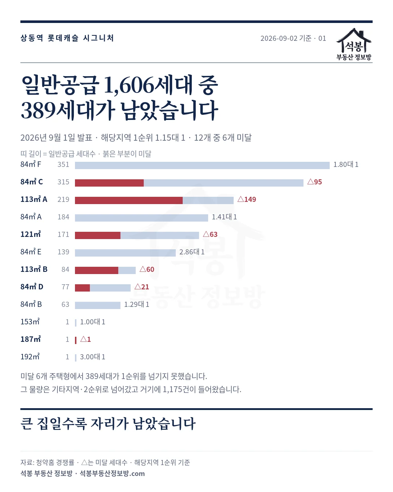
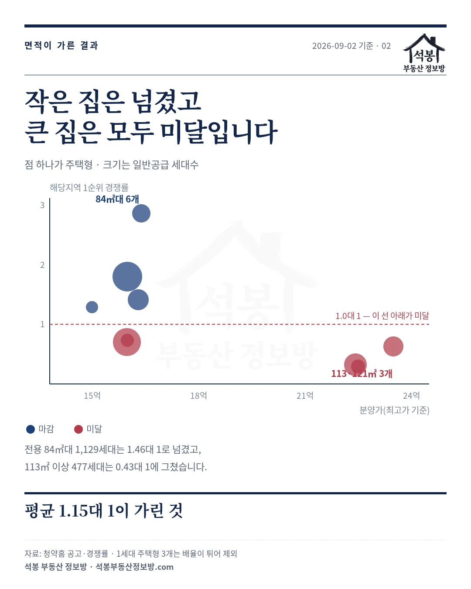
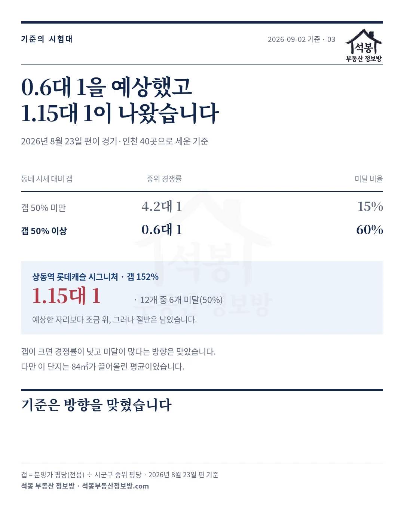

2026년 8월 23일에 부천 상동 1,859세대, 같은 84㎡가 5.67억부터 16.38억까지입니다를 쓰면서 "두 숫자 사이 어디를 볼 것인가가 이번 청약의 질문"이라고 적었습니다. 답이 나왔습니다.
해당지역 1순위에 1,853건이 들어왔습니다. 일반공급 1,606세대에 1.15대 1입니다. 그런데 12개 주택형 중 6개가 미달이었고, 미달난 자리가 389세대입니다.
하나. 절반이 미달났습니다
먼저 결과를 펼치겠습니다. 경쟁률은 해당지역 1순위 접수 건수를 일반공급 세대수로 나눈 값입니다. 특별공급과 2순위는 넣지 않았습니다.
| 주택형(전용) | 일반공급 | 분양가 | 접수 | 결과 |
|---|---|---|---|---|
| 84.99㎡(25.7평) F | 351세대 | 15억 9,900만원 | 633건 | 1.80대 1 |
| 84.99㎡(25.7평) C | 315세대 | 15억 9,800만원 | 220건 | 95세대 미달 |
| 113.10㎡(34.2평) A | 219세대 | 22억 4,200만원 | 70건 | 149세대 미달 |
| 84.92㎡(25.7평) A | 184세대 | 16억 3,000만원 | 260건 | 1.41대 1 |
| 121.58㎡(36.8평) | 171세대 | 23억 4,900만원 | 108건 | 63세대 미달 |
| 84.99㎡(25.7평) E | 139세대 | 16억 3,800만원 | 397건 | 2.86대 1 |
| 113.07㎡(34.2평) B | 84세대 | 22억 4,900만원 | 24건 | 60세대 미달 |
| 84.91㎡(25.7평) D | 77세대 | 15억 9,900만원 | 56건 | 21세대 미달 |
| 84.71㎡(25.6평) B | 63세대 | 14억 9,900만원 | 81건 | 1.29대 1 |
표에는 일반공급 2세대 이상인 9개만 실었습니다. 153.91㎡(46.6평)·187.51㎡(56.7평)·192.15㎡(58.1평) 펜트하우스는 각 1세대씩이라 경쟁률이 크게 튑니다. 그중 187.51㎡(56.7평)는 접수가 없어 미달로 남았습니다.
청약홈 자료에서 미달은 경쟁률 칸에 (△숫자)로 표시됩니다. 숫자가 남은 세대수입니다. 113㎡ A형은 219세대를 내놨는데 70건이 들어와 149세대가 그대로 남았습니다.

가입하시면 지역 시장조사 보고서(약식)를 2회 무료로 요청하실 수 있습니다.
둘. 평균 1.15대 1이 가린 것
전체 숫자만 보면 아슬아슬하게 넘긴 것처럼 보입니다. 그런데 면적으로 나누면 두 무리가 완전히 갈립니다.
전용 84㎡대 6개 주택형은 1,129세대에 1,647건이 들어와 1.46대 1이었습니다. 반면 113㎡ 이상 3개는 477세대에 206건, 0.43대 1이었고 셋 다 미달이었습니다.
미달난 389세대 중 273세대가 113㎡ 이상입니다. 큰 집에서 자리가 남은 것이고, 84㎡가 평균을 1 위로 끌어올린 셈입니다.
같은 84㎡ 안에서도 갈렸습니다. E형이 2.86대 1로 가장 높았고 C형과 D형은 미달이었습니다. 분양가는 넷 다 15억~16억대로 큰 차이가 없어서, 동·향·층 같은 조건이 갈랐을 가능성이 큽니다. 공고 자료만으로는 확인할 수 없어 단정하지 않겠습니다.

셋. 우리가 세운 기준은 방향을 맞혔습니다
8월 23일 편에서 저희는 이렇게 적었습니다. 2026년 5월 12일부터 8월 21일까지 마감한 경기·인천 공고 40곳을 보면, 동네 시세 대비 갭이 50% 미만인 곳은 중위 4.2대 1에 미달이 15%였고, 50% 이상인 곳은 중위 0.6대 1에 미달이 60%였다고요.
이 단지는 갭 152%였습니다. 84㎡대 분양가가 평당 6,237만원인데 부천 원미구 전체 중위가 평당 2,470만원이니 2.5배가 넘습니다.
기준대로면 0.6대 1에 미달 60%를 예상할 자리였습니다. 실제는 1.15대 1에 미달 50%였습니다. 예상보다 조금 나은 쪽이었지만 방향은 맞았습니다.
다만 그 1.15대 1도 84㎡가 만든 숫자입니다. 113㎡ 이상만 떼어 보면 0.43대 1로 오히려 기준보다 낮습니다.
넷. 분양가는 여전히 시세 위에 있습니다
결과가 나왔으니 시세와 다시 맞대 보겠습니다. 비교는 국토부 실거래 2026년 6~8월 계약분 가운데 2026년 9월 2일까지 신고된 것(해제 제외)입니다.
실거래는 신고까지 시차가 있어 8월 계약분은 아직 차오르는 중입니다. 아래 중위값도 시간이 지나면 조금씩 움직입니다.
| 비교 기준 | 표본 | 중위 평당(전용) | 분양가 대비 |
|---|---|---|---|
| 원미구 전체 | 1,265건 | 2,470만원 | +153% |
| 상동·중동 | 1,025건 | 2,542만원 | +145% |
| 상동·중동 84㎡대 | 304건 | 2,717만원 | +130% |
| 원미구 84㎡대 신축(2020년 이후) | 40건 | 4,667만원 | +34% |
연식을 가리지 않으면 153% 위이고, 면적과 연식을 맞추면 34% 위입니다. 8월에 짚은 151%와 33%가 거의 그대로입니다. 한 달 사이 시세가 크게 움직이지 않았다는 뜻입니다.
비교 대상인 신축 두 곳을 보면 센트럴파크푸르지오(2020년)가 84㎡ 중위 12억 2,000만원, 힐스테이트중동(2022년)이 11억 8,900만원입니다. 분양가 15억~16억대와 3~4억 차이입니다.
다섯. 당첨가점은 32점부터입니다
가점은 마감된 84㎡ 네 개 주택형에서만 나왔습니다. 미달난 주택형은 지원자가 모두 당첨돼 가점 자료가 산출되지 않습니다.
| 주택형(전용) | 최저 | 평균 | 최고 |
|---|---|---|---|
| 84.71㎡(25.6평) B | 32점 | 41.00점 | 68점 |
| 84.99㎡(25.7평) F | 35점 | 41.88점 | 74점 |
| 84.92㎡(25.7평) A | 36점 | 41.91점 | 69점 |
| 84.99㎡(25.7평) E | 37점 | 45.50점 | 69점 |
가장 낮은 문턱이 32점이었습니다. 청약가점은 84점이 만점이고, 무주택 기간과 부양가족이 쌓이면 60점대로 올라갑니다. 30점대 초반이면 청약통장 가입 기간이 길지 않아도 닿는 자리입니다.
평균은 41~45점인데 최고가 68~74점입니다. 가점이 높은 분들도 넣었지만, 문턱 자체는 낮게 열려 있었다는 뜻입니다.

남는 것
이 단지는 비규제지역이고 분양가상한제가 적용되지 않았습니다. 민영 아파트 일반분양이고 입주는 2032년 3월 예정입니다. 계약은 2026년 9월 14일부터 17일까지입니다.
정리하면 이렇습니다. 시세보다 34~153% 높은 값에 1,859세대가 한꺼번에 나왔고, 84㎡는 넘겼지만 113㎡ 이상은 셋 다 미달났습니다. 1순위에서 남은 389세대는 기타지역·2순위로 넘어갔고 그쪽에 1,175건이 들어왔습니다.
큰 집이 남고 작은 집이 나가는 흐름은 부천만의 일이 아닙니다. 다만 2032년 입주까지 5년 반이 남았다는 조건이 이 값 안에 함께 들어 있습니다. 그 거리를 어떻게 볼지는 계약 결과가 다시 말해 줄 것입니다.
원자료: 청약홈 입주자모집공고·경쟁률·당첨가점(상동역 롯데캐슬 시그니처, 공고 2026년 8월 14일, 발표 2026년 9월 1일)과 국토교통부 아파트 매매 실거래(2026년 6~8월 계약분 중 2026년 9월 2일까지 신고된 것, 해제 제외). 기준일 2026년 9월 2일
경쟁률은 해당지역 1순위 접수 건수를 일반공급 세대수로 나눈 값이며 특별공급·2순위는 제외했습니다. 미달은 청약홈 경쟁률 칸의 (△숫자) 표기를 따랐고 숫자는 남은 세대수입니다. 면적·평당가는 전용면적 기준입니다
⚠️신고 시차 때문에 8월 계약분은 아직 차오르는 중이라 중위값은 이후 바뀝니다. 표본은 원미구 1,265건, 상동·중동 1,025건, 84㎡대 304건, 신축 40건. 갭은 분양가 평당을 시군구 중위 평당으로 나눈 값입니다
편집·제작: 석봉 부동산 정보방 · 투자 권유가 아닙니다.